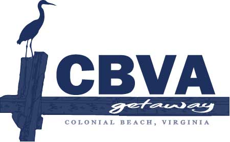
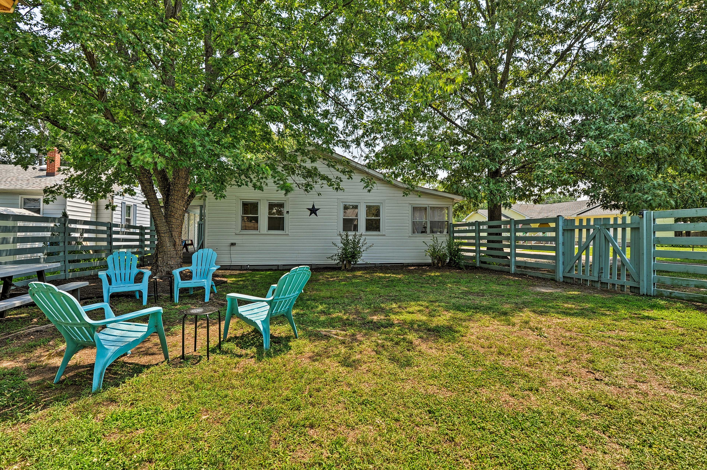
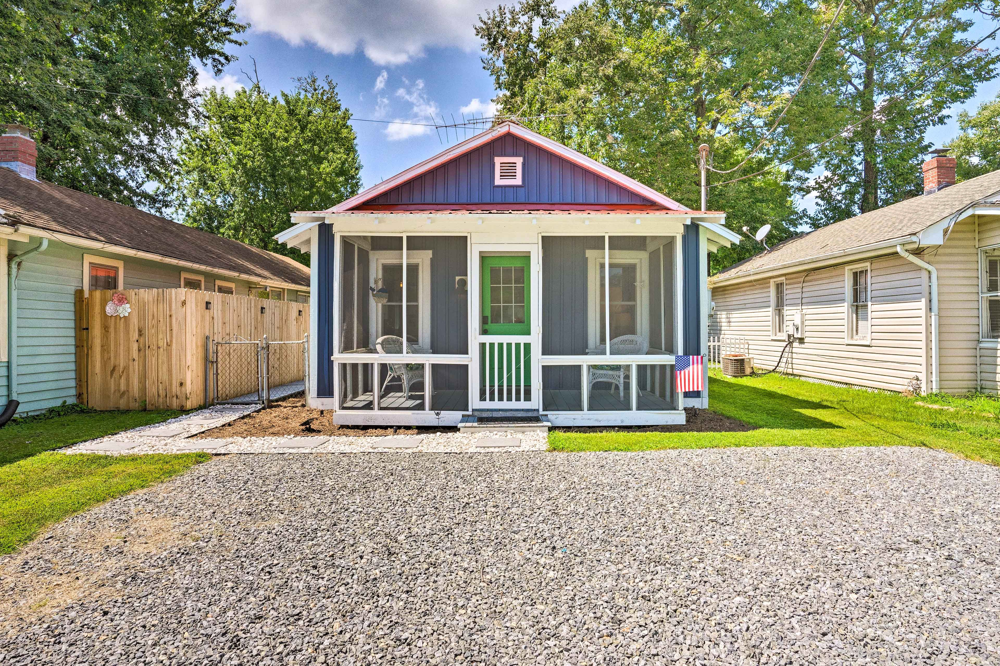

Discover Virginia's Historic Northern Neck Premier Beach Town on the Potomac River - Colonial Beach

The Blue Crab Cottage is a charming Colonial Beach vacation rental just a short walk from the Potomac River waterfront, located 3 blocks from the beach and boardwalk and 4 blocks from downtown Colonial Beach, Virginia. This comfortable 3-bedroom, 1-bath cottage is perfect for families, couples, or small groups looking to enjoy the relaxed charm of this walkable beach town, with easy access to restaurants, marinas, shops, and local attractions along the waterfront.
Book This Home
This chic and cozy Colonial Beach cottage is the perfect Colonial Beach vacation rental for couples or solo travelers, including those bringing furry friends. Located in a quiet neighborhood just a short walk from the Potomac River waterfront and sandy beach, this charming 1-bedroom, 1-bath cottage offers easy access to historic homes, waterfront restaurants, marinas, and local attractions. After a day exploring Colonial Beach, relax and unwind in the private yard.
Book This HomeColonial Beach is one of Virginia's best waterfront vacation destinations, known for its sandy beaches, boating, fishing, golf cart-friendly streets, and laid-back coastal charm. Located within driving distance of Washington, D.C. and Richmond, it offers the perfect weekend or extended getaway.
Our Colonial Beach vacation rentals combine modern comfort with relaxed coastal design — giving you everything needed for a memorable Potomac River escape.
Choose your preferred vacation home above and secure your dates today. We look forward to hosting you in beautiful Colonial Beach, VA.
We offer two thoughtfully designed Colonial Beach vacation rentals in Colonial Beach, Virginia, each professionally maintained for a comfortable stay. One property is a charming beach cottage just a short walk from the Potomac River waterfront, boardwalk, restaurants, and sandy beach, while the other is a cozy 1-bedroom cottage in a quiet neighborhood near the beach and downtown. Both homes are perfect for family vacations, couples’ getaways, fishing trips, and relaxing weekend escapes along the Potomac River.
You can reserve your stay securely through the booking links provided above. Availability calendars are always up to date, and booking online allows you to view pricing, minimum night requirements, and seasonal rates in real time. We recommend booking early during peak summer months and holiday weekends, as Colonial Beach is a popular waterfront destination.
Cancellation policies vary depending on the booking platform used and the timing of your reservation. Full details are provided before confirming your booking. We encourage guests to review cancellation terms carefully and consider travel insurance for additional peace of mind when planning their Colonial Beach getaway.
Yes. Colonial Beach is known for its calm shoreline, relaxed pace, and golf cart-friendly streets. Our homes are well suited for families, offering comfortable living spaces, fully equipped kitchens, and convenient access to local attractions, parks, and waterfront dining.
Absolutely. Both properties include reliable high-speed Wi‑Fi, smart TVs, air conditioning, fully stocked kitchens, and comfortable sleeping arrangements. Whether you’re working remotely or streaming after a day at the beach, you’ll have everything you need for a comfortable stay.
Visitors enjoy sandy beaches along the Potomac River, boating, fishing, waterfront dining, boutique shopping, seasonal festivals, live music, and relaxing sunset views. The town is walkable and welcoming, making it easy to explore the boardwalk and marina areas at your own pace.
Colonial Beach is approximately two hours from Washington, DC and about two hours from Richmond, VA. Its convenient location makes it one of Virginia’s most accessible waterfront vacation destinations for weekend trips and extended stays.
Guests can book directly using the secure booking links on this website. Returning guests are always welcome, and we periodically offer special promotions depending on season and availability.